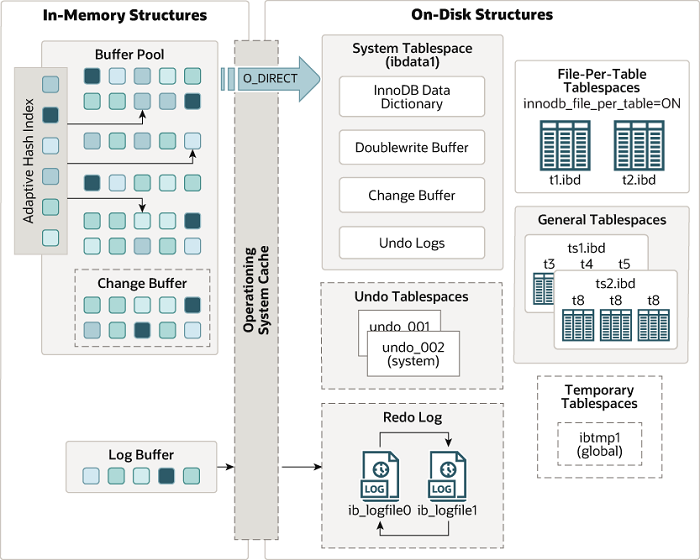

InnoDB 存储引擎
Table of Contents
1 体系结构
MySQL 的 InnoDB 存储引擎体系结构如下图所示

对照 MySQL 数据目录下的文件，可以找到对应的数据项如下
/usr/local/mysql/data $ ll -rw-r----- 1 mysql mysql 56 May 21 09:58 auto.cnf -rw-r----- 1 mysql mysql 139311228 Jul 7 09:48 binlog.000001 -rw-r----- 1 mysql mysql 16 Jun 22 08:14 binlog.index -rw-r----- 1 mysql mysql 11811 Jun 22 08:14 ib_buffer_pool -rw-r----- 1 mysql mysql 79691776 Jul 7 08:23 ibdata1 -rw-r----- 1 mysql mysql 50331648 Jul 7 08:23 ib_logfile0 -rw-r----- 1 mysql mysql 50331648 Jul 6 13:26 ib_logfile1 -rw-r----- 1 mysql mysql 12582912 Jul 7 09:30 ibtmp1 drwxr-x--- 2 mysql mysql 4096 May 21 09:58 mysql drwxr-x--- 2 mysql mysql 8192 May 21 09:58 performance_schema drwxr-x--- 2 mysql mysql 8192 May 21 09:58 sys
备注：
O_DIRECT一般如果在 Linux 内核中读写一个文件，其 IO 流程都需要经过 Kernel 内的 Page Cache 层次，若想要使用自己开发的缓存系统，那么就可以在打开这个文件 的时候， 对该文件加以O_DIRECT的标志位，这样一来就可以让程序对该文件的 IO 直接在磁盘上进行，从而避开了 Kernel 的 Page Cache，进而对 IO 流程里的块数据 进行拦截，让其流入到自己开发的缓存系统内- Redo Log 是循环写入多个文件的，当文件写满可能会触发 checkpoint
2 内存结构
2.1 Buffer Pool
2.1.1 Buffer Pool 概述
Buffer Pool 是 MySQL 缓存数据到内存的结构
- Buffer Pool 一般占用 80% 的 MySQL 的物理内存
- Buffer Pool 中缓存基本数据大小叫做 Page, Page 一般通过链表的方式组织
- LRU-List: 经常用的 Page 通过 LRU 算法组织起来
- MySQL 使用一种改进的 LRU 算法
该算法将 LRU 链表分成两个部分,
innodb_old_blocks_pct参数设置- New Sublist: 占 5/8
- Old Sublist: 占 3/8
New Pages Old Pages <<<<<<<<<<<<<<<<<<<<<<<<<<<<<<<<<<<<<<<<<<<<<<<<<<<<<<<<<<<<<<<<<<< |----------------------------------------|------------------------| | head tail | head tail | |----------------------------------------|------------------------| |<---------- New Sublist 5/8 ----------->|<--- Old Sublist 3/8 -->| ^ | MidPoint Insertion- 当 Page 第一次访问时，会被插入到 MidPoint 处, 即 Old Sublist 的 head, 这么做是减少全表扫描对 LRU 的热数据的影响
- Old Sublist 的数据会在一点的时间窗口被移到 New Sublist 中，通过
innodb_old_blocks_time参数可以控制移动的时间窗口
- Free-List: 缓存中空闲的列表
- Flush-List: 记录被修改的脏页 (dirty page), 这些页需要刷新到磁盘上
2.1.2 Buffer Pool 相关调优
MySQL 默认的 innodb_buffer_pool_size 的默认大小 128 M，一般需要根据需求进
行配置
root@localhost [(none)]> show variables like '%buffer%'; +-------------------------------------+----------------+ | Variable_name | Value | +-------------------------------------+----------------+ | bulk_insert_buffer_size | 8388608 | | innodb_buffer_pool_chunk_size | 134217728 | | innodb_buffer_pool_dump_at_shutdown | ON | | innodb_buffer_pool_dump_now | OFF | | innodb_buffer_pool_dump_pct | 25 | | innodb_buffer_pool_filename | ib_buffer_pool | | innodb_buffer_pool_instances | 1 | | innodb_buffer_pool_load_abort | OFF | | innodb_buffer_pool_load_at_startup | ON | | innodb_buffer_pool_load_now | OFF | | innodb_buffer_pool_size | 134217728 | | innodb_change_buffer_max_size | 25 | | innodb_change_buffering | all | | innodb_log_buffer_size | 16777216 | | innodb_sort_buffer_size | 1048576 | | join_buffer_size | 262144 | | key_buffer_size | 8388608 | | myisam_sort_buffer_size | 8388608 | | net_buffer_length | 16384 | | preload_buffer_size | 32768 | | read_buffer_size | 131072 | | read_rnd_buffer_size | 262144 | | sort_buffer_size | 262144 | | sql_buffer_result | OFF | +-------------------------------------+----------------+
2.2 Change Buffer
Change Buffer 使用了 Buffer Pool 的部分空间完成性能优化
- 它主要对部分不在 Buffer Pool 中的数据 Page 页的 DML 操作 (Insert, Update and Delete) 进行缓存
- 通常这些 DML 语句影响的 Page 具有随机寻址的特性， Change Buffer 将这些修改 缓存起来，当下次读取对应的 Page 时合并修改操作，可以降低 I/O 带来的性能低 的问题
- 对于系统长时间没有访问的 Change Buffer, MySQL 会定期同步数据到磁盘
2.3 Adaptive Hash Index
- InnoDB 存储引擎会监控对表上索引的查找，如果观察到建立哈希索引可以带来速度 的提升，则建立哈希索引，所以称之为自适应（adaptive）
- 自适应哈希索引通过缓冲池的 B+ 树构造而来，因此建立的速度很快。而且不需要将 整个表都建哈希索引，InnoDB 存储引擎会自动根据访问的频率和模式来为某些页建 立哈希索引
2.4 Log Buffer
- Redo Log 日志文件也需要相应的内存数据结构来进行缓存操作
- Log Buffer 就是用于缓存 Redo Log 日志文件的内存空间
- 其空间大小可以通过参数
innodb_log_buffer_size来设定 - 日志文件的每次更新都应该刷会磁盘，不然就会有数据丢失或不一致的风险,
innodb_flush_log_at_trx_commit参数用于设置日志刷回磁盘的频率- 默认值为 1， 即每次事务提交时，都会记录日志，并将其刷回到磁盘
- 参数值为 0 时，日志写入和刷回磁盘的操作为每秒 1 次
- 参数值为 2 时，每次事务提交时都会写入 Log Buffer，但 Log Buffer 更新到磁 盘的操作为每秒 1 次
3 磁盘结构
3.1 表 Tables
这里着重介绍使用 InnoDB 表结构需要的注意事项
- 调整数据库的内存结构
key_buffer_size配置 MyISAM 表的缓存结果， InnoDB 一般不需要，可以适当 调小一点innodb_buffer_pool_size配置 InnoDB 的 Buffer Pool 大小，适当扩大内存来 获取更高的性能
- 调整事务的参数
autocommit- MySQL 的
autocommit默认为 1, 即开启事务提交 - 应用程序在使用事务时，需要显示关闭自动提交这个参数
- MySQL 的
- 处理死锁问题
- 通过下列命令查看
show engine innodb status\G innodb_deadlock_detect是检测死锁是否开启，如果死锁检测到立马回滚innodb_lock_wait_timeout可以配置等待超时，避免长时间的死锁
- 通过下列命令查看
- InnoDB 的建表需要满足如下条件来提供性能
- 建表时添加主键, 用于标识数据
- 主键的值最好使用
CREATE TABLE语句, 而避免使用ALTER TABLE语句 - 主键类型需要事先选择好，一般使用自增主键时一个比较好的选择
- 修改主键类型是一个代价比较大的操作，涉及如下影响
- 导致表的数据的重新排布
- 影响非聚簇索引的结构
3.2 索引 Indexes
- InnoDB 的索引使用 B+ 树结构，另外有一种哈希索引，MySQL 中只有 MEMORY 引擎支 持哈希索引
- B+ Tree 索引包括以下特征, 具体见文档
innodb_page_size表示页的大小，默认 16Kinnodb_fill_factor表示 B+ 树索引页的填充百分比，默认值 100 表示保留 1/16 的数据空间预留给将来的扩展
- 聚簇索引 clustered index, 参考这里
- 每张表的主键构造一棵 b+ 树, 同时叶子节点中存放的就是整张表的行记录数据
- 聚集索引的叶子节点称为数据页 (page)
- 索引组织表中数据的同时也是索引的一部分, 每张表只能拥有一个聚簇索引, 主
键索引的 key 选择的如下顺序
- 首要选取自增主键
- 其次选取非空的唯一键
- 如果上述都不满足，自动生成一个 6 字节的 rowid 字段
- 优点
- 数据访问更快, 因为聚簇索引将索引和数据保存在同一个 B+ 树中, 因此从聚簇 索引中获取数据比非聚簇索引更快
- 聚簇索引对于主键的排序查找和范围查找速度非常快
- 缺点
- 插入速度严重依赖于插入顺序, 按照主键的顺序插入是最快的方式, 否则将会出 现 页分裂, 严重影响性能。因此, 对于 InnoDB 表, 我们一般都会定义一个 自增的 ID 列为主键 (optimistic insertion 和 pessimistic insertion)
- 更新主键的代价很高, 因为将会导致被更新的行移动。因此, 对于 InnoDB 表, 我们一般定义主键为不可更新
- 二级索引访问需要两次索引查找, 第一次找到主键值, 第二次根据主键值找到行 数据, 即 回表 操作
- 辅助索引 secondary index
- 辅助索引叶子节点存储的不再是行的物理位置, 而是主键值
- 通过辅助索引首先找到的是主键值, 再通过主键值找到数据行的数据页, 再通过数 据页中的 Page Directory 找到数据行
- 每张表可以拥有多个非聚簇索引
- 联合索引为非聚簇索引, 节点中除了存储索引字段, 还额外存储主键
- 联合索引查询时, 需要考虑以下的情形
- 最左前缀 指 WHERE 查询条件利用联合索引的从左到右的匹配, 如果匹配成功, 该查询走联合索引
- 回表 指 WHERE 查询条件找到主键后, 然后通过主键返回 B+ 树中查找数据
- 索引覆盖 Covering Index 只需要在一棵索引树上就能获取 SQL 所需的所有列 数据, 无需回表,速度更快
- 索引下推 Index Condition Pushdown 在 MySQL 5.6 引入了索引下推优化, 可 以在索引遍历过程中, 对索引中包含的字段先做判断, 过滤掉不符合条件的记录, 减少回表次数
3.3 表空间 Tablespaces
- 系统表空间, 系统表空间包括如下部分
- Data Dictionary 数据字典
- Doublewrite Buffer
- Change Buffer
- Undo Log
- 系统表空间默认是一个单 Datafile 管理方式，默认命名为 ibdata1
- File-Per-Table 表空间, 即每个
CREATE TABLE语句生成的表默认占一个表空间 文件, 更多优缺点参考文档- 优点
- TRUNCATE 表过后立马释放操作系统中文件占用的空间, 注意，共享表空间的表 在 TRUNCATE 过后不会立马释放
- 共享表空间在修改表
ALTER TABLE的语句执行后产生的额外空间不会释放， 对于 File-Per-Table 表空间则不会出现这种情况 - 单个文件管理方式更加良好，例如： I/O 优化, 空间管理, 备份管理
- 当
innodb_flush_method设置成 ODIRECT 时, Linux 文件系统不允许并发 写入共享表空间, 但是对于 File-Per-Table 则不会出现问题 - 表空间最大为 64TB, File-Per-Table 相当于每张表可以存 64TB
- 缺点
- 每张表存在一些预留的数据占用，File-Per-Table 多了会造成浪费
- fsync 操作需要对每个表空间进行，增加了 fsync 操作的开销
- mysqld 进程需要开多个文件句柄，造成操作系统资源浪费和性能开销
- 优点
- 通用表空间
- Undo 表空间
- Undo 表空间专门存放 Undo Log
- Undo Log 默认存在系统表空间中，但是也可以存在 Undo 表空间中
- Undo Log 可以存放在 SSD 中，用于提高 MySQL 的性能
- 临时表空间
- 不压缩的用户创建的临时表
- 磁盘中的内部临时表
- 注意,
ROW_FORMAT=COMPRESSED压缩的临时表使用 File-Per-Table 表空间管理, 数据文件放在临时文件夹
3.4 Doublewrite Buffer
- 双写技术指的是 Buffer Pool 的写入页面时调用一次
fsync()函数来完成数据写 入系统表空间的 Doublewrite Buffer 区域，而不是多次调用fsync()来写入每 个表空间 - 这样做可以减少 I/O 的开销
- 便于崩溃恢复
- 双写技术默认开启, 可以调整
innodb_doublewrite参数为 0 来关闭
3.5 Redo Log
- Redo Log 存储在磁盘中, 用于崩溃恢复时完成不完整的事务操作
- Redo Log 记录修改表数据 SQL 语句对应的 low-level 的数据库操作
- 默认情况下, Redo Log 物理存储在两个文件中, iblogfile0 和 iblogfile1, 两 个文件循环利用
innodb_log_file_size控制 Redo Log 的大小innodb_log_files_in_group控制 Redo Log 的数量- Redo Log 是物理日志，记录的是数据页的物理修改，而不是某一行或某几行修改成 怎样怎样
- Redo Log 用来恢复提交后的物理数据页，且只能恢复到最后一次提交的位置
3.6 Undo Log
- Undo Log 是与单个读写事务关联的撤消日志记录的集合
- InnoDB 存储引擎对 Undo Log 的管理采用段 Segment 的方式，具体来说是一种命名 为回滚段 Rollback Segment 的数据结构
- InnoDB 支持最多 128 个回滚段，其中 32 个回滚段分配给了临时 table 空间。剩 下的 96 个回滚段可以分配给修改常规 table 中数据的事务
innodb_rollback_segments变量定义 InnoDB 使用的回滚段数- 与 Redo Log 不同的是, Undo Log 一般是逻辑日志，根据每行记录进行记录，常见
有如下几类定义
- 用户定义表的 INSERT 操作
- 用户定义表的 UPDATE 和 DELETE 操作
- 用户定义临时表的 INSERT 操作
- 用户定义临时表的 UPDATE 和 DELETE 操作
4 多版本控制
InnoDB 的多版本控制 (MVCC) 添加如下三个字段来记录额外的信息
DB_TRX_ID6 字节的事务标识- 记录上一个 Insert 或者 Update 的事务 ID
- Delete 的事务也被当成一种特殊的 Update, 只不过多了一个标记位
DB_ROLL_PTR7 字节的回滚指针- 指向一个 Undo Log 记录
- 如果是列更新了的话， Undo Log 包含反向重建的操作
DB_ROW_ID6 字节的行标识- 就是聚簇索引的标识
具体实现使用到了 Undo Log 的磁盘结构，同时需要区分当前读和快照读
5 锁和事务模型
5.1 锁
- 锁实现方式
- Shared (S) Lock: 共享锁
- SELECT 读操作时使用共享锁
- Exclusive (X) Lock: 排它锁
- UPDATE, DELETE 操作使用排他锁
SELECT ... FOR UPDATE
- Shared (S) Lock: 共享锁
- 行锁算法
- Record Lock 记录锁
- 记录锁定是对索引记录的锁定
- 记录锁始终锁定索引记录
SELECT ... WHERE id = 10 FOR UPDATE
- Gap Lock 间隙锁
- 间隙锁定是对索引记录之间的间隙的锁定
- 间隙可能跨越单个索引值，多个索引值，甚至为空
- 间隙锁是性能和并发性之间权衡的一部分，并且在某些事务隔离级别而非其他级别 中使用
SELECT ... WHERE id BETWEEN 10 AND 20 FOR UPDATE
- Next-Key Lock (Record + Gap) 下一键锁
- 下一键锁定是索引记录上的记录锁定和索引记录之前的间隙上的间隙锁定的组合
- 如果一个锁同时生成了 Record Lock 和 Gap Lock 就可以称之为 Next-Key Lock
- Record Lock 记录锁
- 表锁算法
- Insert Intention Lock 插入意向锁
- 插入意图锁定是一种在行插入之前通过 INSERT 操作设置的间隙锁定
- AUTO-INC Lock 自增锁
- 事务插入自增类型的列时获取自增锁
- 如果一个事务正在往表中插入自增记录，所有其他事务的插入必须等待
- Intetion Lock 意向锁
- Intetion Shared Lock (IS): 意向共享锁, 表中每行数据添加共享锁
SELECT ... LOCK IN SHARE MODE
- Intetion Exclusive Lock (IX): 意向排它锁，表中每行数据添加排他锁
LOCK TABLE ... WRITESELECT ... FOR UPDATE
- Intetion Shared Lock (IS): 意向共享锁, 表中每行数据添加共享锁
- Insert Intention Lock 插入意向锁